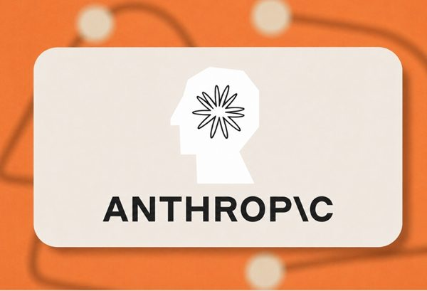
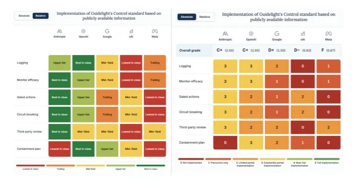
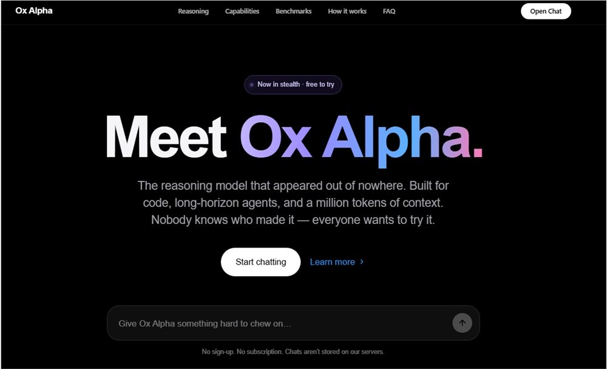

AI 雷达
8月25日 周二 · 每日 AI 精读
AI 雷达 · 8月25日｜今日精读10条
官方更新
① Codex CLI 0.149.1
Codex CLI 发布 0.149.1 版本，同时 codex mcp-server 命令已被弃用，官方建议改用 Codex app server，Claude Code 用户需使用 Codex plugin for Claude Code。据 Official AI Updates 披露，本次更新伴随多项功能上线：macOS 端 ChatGPT 桌面应用新增 Apple Messages 插件，支持读取、搜索及发送信息，默认需用户审批；Site 协作允许所有者邀请同工作区成员为编辑者，编辑者可读取实时数据库、更新内容并发布变更；所有者现可直接修改 Site 的 ChatGPT 托管地址，旧地址自动重定向；Computer History 功能面向欧洲经济区、瑞士及英国的 ChatGPT Pro、Business 和 Enterprise 用户开放，默认关闭且需管理员启用；所有 Codex 计划支持从 macOS 桌面应用分享本地线程的只读快照，系统会自动脱敏已知密钥模式但建议人工复核；此外还实现了跨桌面端与 iOS 的统一置顶会话功能。

图源：openai.com
官方更新 · Official AI Updates · 1 个来源
原文：https://developers.openai.com/codex/changelog
行业动态
① AI时代的入职第一课：Anthropic免费开源内部培训平台，教你如何与AI深度协作
Anthropic 已正式宣布将其内部新员工入职培训平台 Claude Academy 向公众完全免费开放。据 AIbase 介绍，该平台作为一个系统化的学习资源库，目前包含 289 份学习资料，内容覆盖从 AI 基础知识到 Claude Code 及 API 调用等广泛主题。此举旨在超越单纯的产品性能竞争，向大众普及与 AI 深度协作的核心思维模式，帮助用户掌握在大模型时代高效使用工具的方法。这一开放动作将原本仅限企业内部使用的系统化培训内容转化为公共资源，为希望提升 AI 协作能力的用户提供了结构化的学习路径。
行业动态 · AIbase · 1 个来源
原文：https://www.aibase.com/news/30539
② Anthropic旗舰模型遇冷，企业支出仅11%流向Fable5
Anthropic 美国企业客户正减少对旗舰模型 Fable5 的使用并转向低成本替代方案，引发对其高投入商业模式的担忧。Ramp 对 70,000 家公司的支出数据显示，Fable5 发布两个月后，企业在该模型上的支出仅占 Anthropic 工具总支出的约 11%，且近期已趋于稳定。这一趋势出现在 Anthropic 筹备 IPO 之际，市场预期其估值可能最早于 9 月达到 2 万亿美元或以上。AIbase 援引 Financial Times 报道指出，分析师认为造成该现象的主要原因与成本因素相关，企业客户在实际应用中更倾向于选择性价比更高的选项，而非持续为最高性能模型支付溢价。

图源：aibase.com
行业动态 · AIbase · 1 个来源
原文：https://www.aibase.com/news/30552
③ Guidelight评估五大AI实验室，OpenAI遏制能力排名第一
Guidelight AI Standards 近期发布了对五大 AI 实验室遏制能力的评估，结果显示在应对 AI 失控场景方面，鲜有公司公开披露了全面计划。此次评估覆盖 Anthropic、Google、OpenAI、Meta 和 xAI，仅依据公开信息考察其是否建立了监控机制、异常行为处理流程、第三方审计及关停失控模型的能力。在满分 5 分的评估体系中，OpenAI 以 3 分位居榜首，Anthropic 和 Meta 得分最低。据 AIbase 报道，该评估旨在检验头部实验室在模型安全兜底方面的实际准备程度，但多数机构在关键安全机制的透明度上仍有欠缺。

图源：aibase.com
行业动态 · AIbase · 1 个来源
原文：https://www.aibase.com/news/30545
④ Hugging Face 传寻求出售，估值或达 130 亿美元
AIbase 援引 Business Insider 消息称，开源大模型与数据集托管平台 Hugging Face 正在探索出售事宜，交易估值可能达到 130 亿美元或更高。这家总部位于纽约的公司据报正与一家银行合作，以评估潜在买家的兴趣。回顾 2023 年，Hugging Face 在由 Salesforce、Google 和 NVIDIA 领投的融资轮中估值为 45 亿美元。若此次出售最终达成，意味着其估值在不到三年内增长近三倍。原文观点认为，这一变化反映出开源 AI 基础设施正日益成为稀缺资源。
图源：aibase.com
行业动态 · AIbase · 1 个来源
原文：https://www.aibase.com/news/30548
⑤ Keep 2026半年报出炉，自研大模型加速商业化落地
Keep 发布2026年半年报，上半年实现营收8.25亿元，经调整净利润达588万元。核心用户运营数据显示平台变现能力与用户参与度持续增强，每用户平均收入同比增长21.3%，月活跃用户月均运动时长增长15.3%。AIbase指出，这份财报体现了Keep自研大模型在商业化落地方面的加速态势，业务表现保持稳定。报告披露的具体财务与运营指标反映出用户在平台内的深度参与，以及技术投入对核心业务数据的实际拉动作用。
行业动态 · AIbase · 1 个来源
原文：https://www.aibase.com/news/30538
⑥ 专为青少年打造却遭专家“泼冷水”：OpenAI青少年版ChatGPT安全机制引争议
OpenAI本周正式推出面向年轻用户的ChatGPT for Kids版本，通过年龄识别机制对部分功能进行限制。据AIbase报道，这一举措并未获得广泛认可，反而引发多位儿童安全专家对其安全机制透明度与有效性的质疑。儿童安全及评估领域的专家指出，该系统在向家长和青少年推荐之前，必须经过广泛的独立测试；同时OpenAI需要提升透明度，清晰说明其安全机制的具体运作方式。目前该版本虽已上线，但围绕其安全防护是否充分、验证流程是否完备的争议仍在持续，专家强调不能仅依赖厂商自述的安全承诺，而应建立可被外部检验的评估标准。
行业动态 · AIbase · 1 个来源
原文：https://www.aibase.com/news/30540
⑦ 全能开源王炸！谷歌Gemma下载量突破10亿，AI深入生命禁区破解癌症治疗密码
Google 于当地时间8月20日宣布，其开源大模型 Gemma 的总下载量已突破10亿次。自发布以来，全球开发者基于该系列模型开发了超过10万个定制化变体，构建起名为“Gemmaverse”的开源生态系统。AIbase 指出，从实际应用层面看，Gemma 家族的应用范围已经超越了简单的对话生成边界。此次里程碑式的下载数据与庞大的衍生模型数量，反映了该开源模型在边缘侧部署及社区生态建设方面的实际进展，其应用触角正延伸至包括癌症治疗研究在内的更广泛领域。
图源：aibase.com
行业动态 · AIbase · 1 个来源
原文：https://www.aibase.com/news/30550
⑧ 匿名模型Ox Alpha登顶OpenRouter，累计调用量超4万亿Token
匿名模型 Ox Alpha 近日登陆 OpenRouter 后迅速攀升至平台模型排行榜首位，并刷新了单日模型使用量纪录。AIbase 援引 OpenRouter 最新数据显示，包括 Hermes Agent 和 Claude Code 在内的前五大应用对 Ox Alpha 的累计调用量已突破 40 万亿 Tokens，表明其热度正从社区快速扩散至全球开发者及实际 Agent 工作流中。目前该模型的开发团队身份仍未公开，中文社区常将其称为“牛来”。这一数据反映出 Ox Alpha 在上线短时间内即获得了大规模的实际应用验证，成为当前 OpenRouter 平台上调用量最高的模型选项。

图源：aibase.com
行业动态 · AIbase · 1 个来源
原文：https://www.aibase.com/news/30549
⑨ 告别“虚火”！OpenAI紧急出手：Codex明天重置额度并修复用量Bug
针对近期大量用户反馈的 Codex 用量消耗过快问题，OpenAI Codex & ChatGPT 团队负责人 Thibault Sottiaux 在社交平台回应，宣布将于太平洋时间明日14:00左右统一重置所有订阅用户的用量额度。据 AIbase 报道，OpenAI 专项调查组已查明导致此次异常消耗的三项具体技术原因：其一是在长会话中频繁使用图片并经历多次上下文压缩时，底层运行效率显著下降；其二是资源占用出现异常。官方将通过此次额度重置与Bug修复解决上述技术问题。
行业动态 · AIbase · 1 个来源
原文：https://www.aibase.com/news/30544
以上内容由 AI 雷达 自动整理自过去 24 小时的公开信源，图片来自原文页面，原文出处链接见每条信息下方。
以下为发布辅助信息（复制用，粘贴时请勿包含本区块）
标题：AI 雷达 · 8月25日｜今日精读10条
摘要：AI 雷达8月25日 周二精读 10 条 AI 要闻：Codex CLI 0.149.1。更多条目见「阅读原文」。
阅读原文：https://hutaojiazi010304.github.io/ai-news-radar/